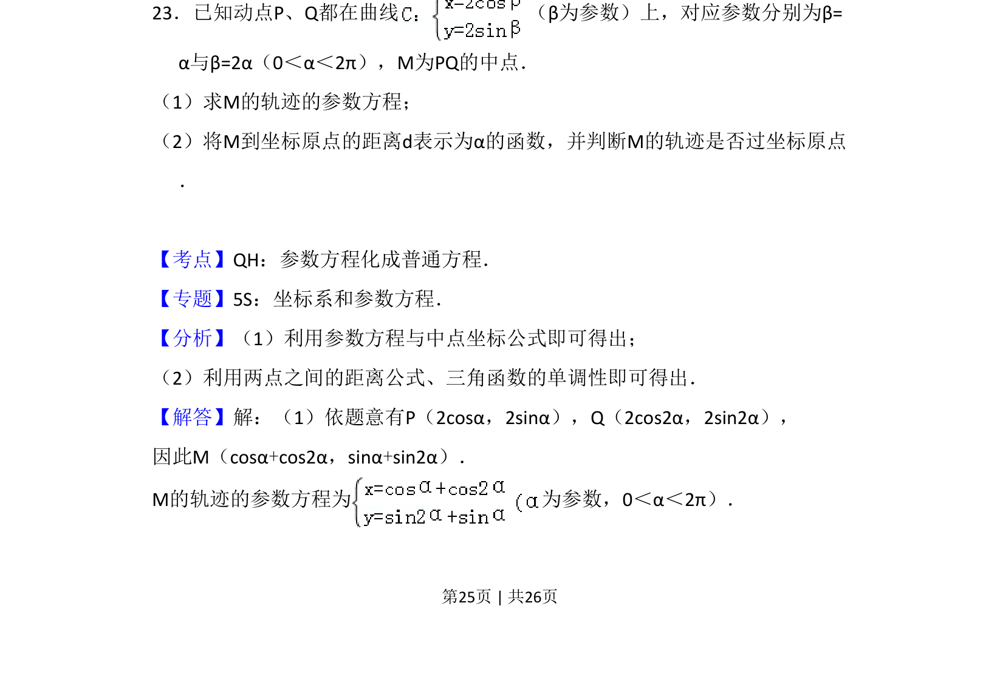
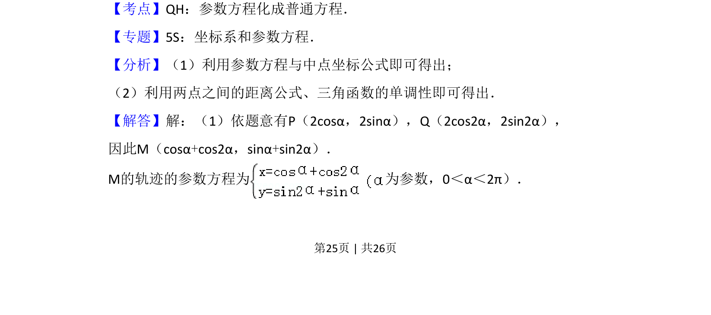
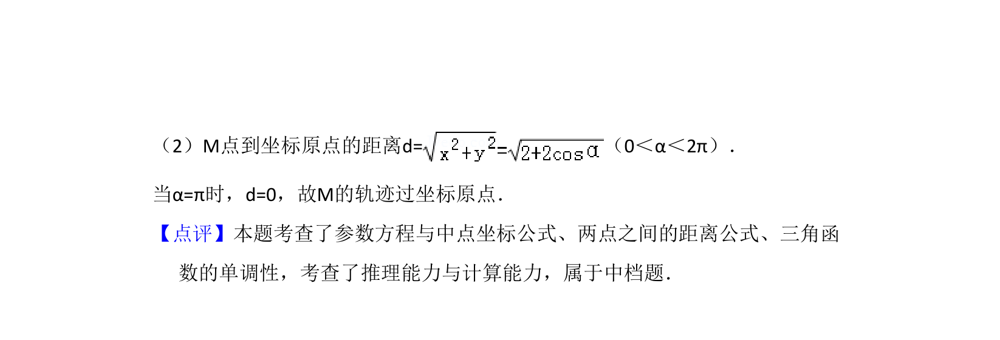

考点：参数方程 中点坐标公式 两点间距离公式

本题通过参数方程给出两点，求其中点轨迹的参数方程，并判断轨迹是否过原点。


📄 原 PDF 第 25 页：
素材/真题/吉林/2008-2024·（吉林）数学高考真题/2013年高考数学试卷（理）（新课标Ⅱ）（解析卷）.pdf
23．已知动点P、Q都在曲线 （β为参数）上，对应参数分别为β= α与β=2α（0＜α＜2π），M为PQ的中点． （1）求M的轨迹的参数方程； （2）将M到坐标原点的距离d表示为α的函数，并判断M的轨迹是否过坐标原点 ．
【考点】QH：参数方程化成普通方程．菁优网版权所有 【专题】5S：坐标系和参数方程． 【分析】（1）利用参数方程与中点坐标公式即可得出； （2）利用两点之间的距离公式、三角函数的单调性即可得出． 【解答】解：（1）依题意有P（2cosα，2sinα），Q（2cos2α，2sin2α）， 因此M（cosα+cos2α，sinα+sin2α）． M的轨迹的参数方程为 为参数，0＜α＜2π）．